5. Recherche, Consultation et Modification¶
Cette partie décrit les fonctionnalités de recherche, de consultation et de modification d’une unité archivistique ou d’un fonds d’archives dans la solution logicielle Vitam.
5.1. Recherche d’une unité archivistique¶
Pour effectuer une recherche d’une unité archivistique, l’utilisateur clique sur le menu « Recherche », puis sélectionne « Recherche d’archives ».
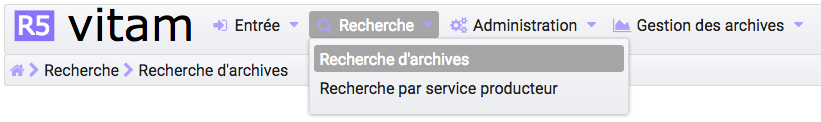L’accès à deux modes de recherche est proposé sur la page « Recherche d’archives » :
- l’un simple, de type recherche libre, dite « recherche globale »
- l’autre, complexe, ciblant certains types de métadonnées, dite « recherche avancée »
Chacun de ces modes est accessible par un onglet spécifique. Par défaut, le mode recherche globale est affiché. Un clic sur l’onglet « Recherche avancée » affiche le formulaire de recherche avancée.
5.1.1. Recherche globale¶
Pour effectuer une recherche globale, l’utilisateur saisit un ou plusieurs mots dans le champ « Intitulé ou description » puis presse la touche « Entrée » de son clavier ou clique sur le bouton « Rechercher ».
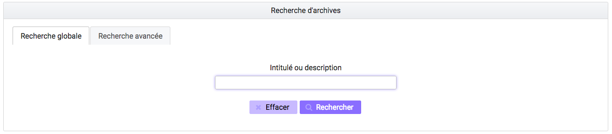Le ou les mots saisis vont être recherchés dans les métadonnées « Titre » et « Description » des unités archivistiques. La recherche simple s’effectue sur chacun des mots entrés de manière indépendante (réalisé avec un opérateur « OU ») et permet de trouver les mots appartenant à l’un, à l’autre, ou aux deux ensembles de métadonnées visés. Il n’est pas possible de la paramétrer. Par exemple, une recherche « département Gironde » retournera des résultats comprenant le mot « département » ou le mot « Gironde ».
Lorsqu’une recherche libre est effectuée, tous les résultats comprenant la chaîne de caractères demandée seront remontés. Exemple : pour une recherche du mot « acte » sera remonté « acte de naissance » ou « Divers actes de mariage ».
Les caractéristiques du mode de recherche sont les suivantes :
- La recherche n’est pas sensible à la casse
- Les résultats ne tiennent pas compte des accents ou graphèmes divers (ç, ß, etc.)
- Les résultats ignorent les caractères spéciaux
5.1.2. Recherche avancée¶
La recherche avancée permet à l’utilisateur d’effectuer sa requête dans un ou plusieurs champs précis de l’unité archivistique.
Le ou les mots saisis vont être recherchés dans les métadonnées suivantes :
- Intitulé de l’unité archivistique
- Description de l’unité archivistique
- Identifiant de l’unité archivistique (attribué par le système)
- Dates extrêmes (date de début et date de fin)
- Service producteur de l’entrée
- Catégorie de règle
- Date d’échéance
- Sort final ( actif seulement lorsque l’on sélectionne comme catégorie d’opération : Durée d’utilisté administrative et Durée d’utilité courante)
Pour initier la recherche avancée, l’utilisateur saisit ses éléments dans les champs disponibles, puis clique sur le bouton « Rechercher ».
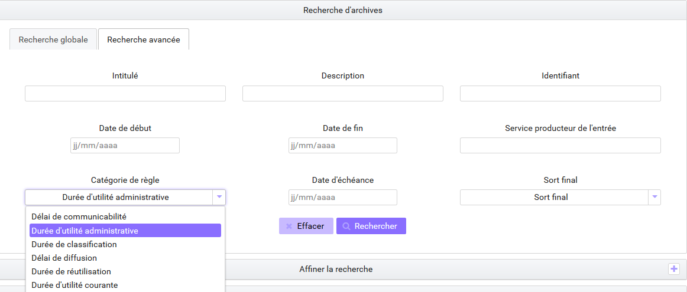Recherche par dates extrêmes
Lorsqu’un utilisateur souhaite faire une recherche par dates extrêmes, un contrôle sur ces dates est effectué :
- la date de début doit être antérieure à la date de fin
- les deux champs dates doivent être renseignés
Dans le cas contraire, un message d’erreur est affiché.
Recherche par identifiant d’une Unité Archivistique
La recherche par identifiant est spécifique. L’identifiant étant unique, il n’est pas possible d’effectuer une recherche croisée par identifiant et tout autre champ. L’identifiant est l’identifiant système attribué par VITAM (SystemId) et peut être retrouvé via la notification de la demande de transfert (ATR).
5.1.3. Affiner la recherche¶
Un utilisateur peut également affiner sa recherche de résultats en sélectionnant différents filtres (facette). Pour accéder à ces filtres, l’utilisateur doit déplier le bloc « Affiner la recherche » en cliquant sur le pictogramme « plus » situé à droite de l’écran.
L’utilisateur peut filtrer les résultats de recherche en sélectionnant un des filtres proposés:
Niveau de description
- Item = ArticleFile = Document
- SubGrp = Groupe d’articles
- RecordGrp = Sous-groupe d’articles
- Subseries = Sous-série
- Series = Série
- Collection = Collection
- Class = Classe
- Subfonds = Sous-fonds
- Fonds = Fonds
Service producteur
Date de début
Date de fin
Titre par langue
Langue
Unités archivistiques avec et sans objet
Pour lancer cette opération, la ou les facette(s) concernée(s) doi(ven)t être cochée(s) et l’utilisateur doit cliquer sur « rechercher » dans le bloc « affiner la recherche ». Pour lancer une nouvelle facette, l’utilisateur peut « rafraichir » ses précédents résultats en cliquant sur « effacer », sélectionner une autre facette et lancer l’opération en cliquant sur « rechercher ». Au clic, sur une des occurrences de la facette, l’utilisateur visualise, dans le bloc de « résultats », la liste des unités archivistiques correspondant à sa demande.
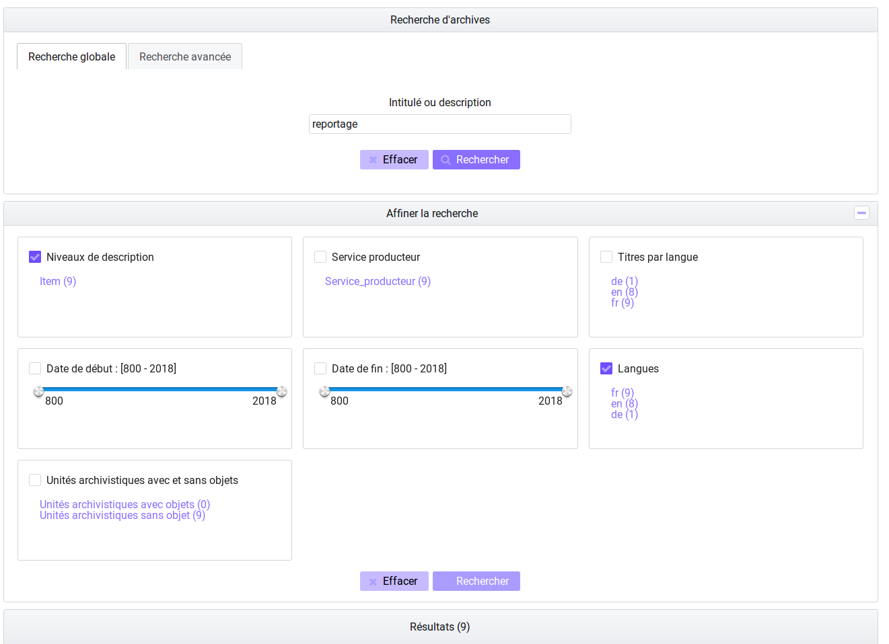5.1.4. Résultats de recherche¶
Suite à la recherche, les résultats sont affichés sous forme de tableau, comportant les informations suivantes : :
- Identifiant
- Intitulé
- Type
- Service producteur
- Date la plus ancienne
- Date la plus récente
- Objet(s) disponible(s) (une coche est affichée si l’unité archivistique dispose d’un ou de plusieurs objets, dans le cas contraire, une croix est affichée)
- Cycle de vie
- Ajout au panier
Pour ajouter les unités archivistiques au panier, il suffit de cliquer sur les pictogrammes, trois possibilités sont offertes à l’utilisateur : mettre au panier l’unité archivistique seule, l’unité archivistique et sa descendance, l’unité archivistique et son entrée (possibilités décrites au survol des pictogrammes). Si l’on prend toute l’entrée, on crée autant d’objets dans le panier que d’unités archivistiques, si on prend l’unité archivistique et sa descendance, on ne crée qu’un objet dans le panier.
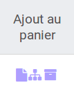En cas de recherche infructueuse, le message « Aucun résultat » s’affiche sous le formulaire.
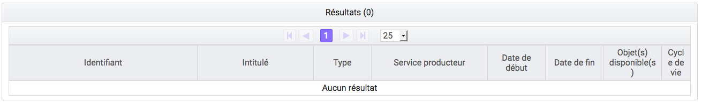5.2. Consultation du détail d’une unité archivistique¶
Depuis la liste des résultats, l’utilisateur peut consulter le détail d’une unité archivistique en cliquant sur la ligne correspondant à l’unité archivistique souhaitée.
5.2.1. Détail de l’unité archivistique¶
La page affiche les informations concernant l’unité archivistique et le groupe d’objets associé, informations contenues dans le bordereau SEDA et récupérées lors de l’entrée de l’unité archivistique dans la solution logicielle Vitam et éventuellement modifiées par la suite (cf. paragraphe modifications des métadonnées).
La page est divisée en plusieurs sections :
- certaines sont affichées par défaut
- d’autres, masquées, peuvent être visualisée en cliquant sur le « + » situé à droite de leur titre
5.2.1.1. Contexte de l’unité archivistique¶
Affichée par défaut, cette section permet de visualiser et naviguer dans l’arborescence montante et descendante de l’unité archivistique.
L’unité archivistique que l’on consulte est signalée en gras et par un pictogramme de maison situé à gauche. Les niveaux supérieurs ou parents sont indiqués par des chevrons, les niveaux inférieurs ou enfants, par des plus. Un clic sur un chevron ou un « + » déploie l’arborescence, un clic sur l’intitulé redirige sur la page de détail de l’unité archivistique sélectionnée. La racine est indiquée par une cible.
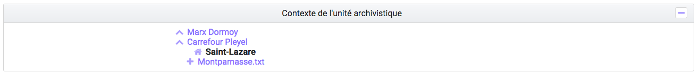Par défaut, l’unité archivistique affiche cinq niveaux parents et enfants directs. Dans le cas où il existe plus de cinq enfants, un lien « plus d’enfants » est affiché.
Un clic sur ce lien ouvre une fenêtre modale composée d’un formulaire de recherche et sa liste de résultats.
Le formulaire permet d’effectuer une recherche par intitulé et dates extrêmes sur les niveaux enfants de l’unité archivistique.
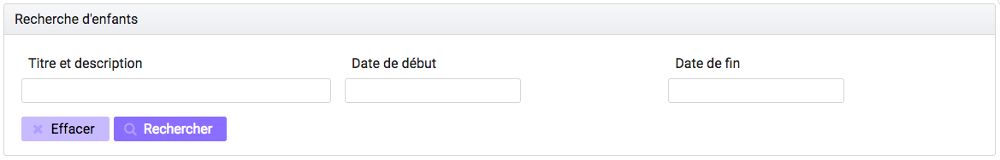Les résultats sont affichés avec les informations suivantes :
- Sélectionné : permettant de sélectionner les unités archivistiques
- Identifiant
- Intitulé
- Type
- Service producteur
- Date de début
- Date de fin
La colonne « Sélectionné » permet de visualiser les unités archivistiques visibles dans l’arborescence, les 5 unités archivistiques affichées par défaut, sont déjà sélectionnées. Un clic sur une ligne permet de sélectionner ou désélectionner l’unité archivistique correspondante. Un fois les choix effectués, un clic sur le bouton « valider » enregistre les sélections et ferme la fenêtre automatiquement. L’arborescence affiche les unités sélectionnées.
Un pictogramme de croix, placé en haut à droite de la fenêtre permet de la refermer.
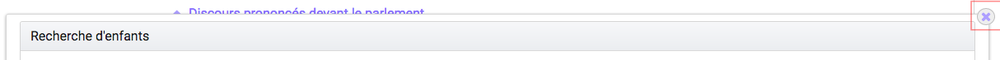5.2.1.2. Description principale¶
Affichée par défaut, cette section contient les principales métadonnées descriptives de l’unité archivistique.
Concernant les services producteurs, il faut différencier :
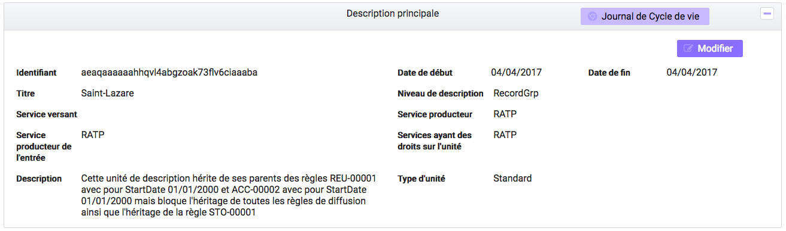
- Service producteur correspondant au service producteur de l’unité archivistique, repris du bloc <Content> du bordereau de transfert, qui sera dans la partie Description complémentaire.
- Service producteur de l’entrée, correspondant à la valeur de l”<OriginatingAgencyIdentifier> déclaré dans le bordereau de transfert au niveau du bloc <ManagementData>
- Services ayant des droits sur l’entrée, correspondant aux services producteurs de l’entrée et à ceux des entrées des parents auxquels des unités archivistiques ont été rattachées, depuis le bloc <ManagementData>
Modifications des métadonnées
La plupart des métadonnées descriptives peuvent être modifiées en cliquant sur le bouton « Modifier ».
Note
Une contrainte technique limite le nombre de caractère par champ à 32 000. Un contrôle est effectué lors de l’entrée et à la mise à jour. Si, un des champ de l’unité archivistique excède cette limite, la mise à jour ne sera pas validée.
Chaque ligne devient alors éditable, excepté les champs identifiant, type d’unité, service producteur de l’entrée et services ayant des droits sur l’unité.
Une fois les modifications saisies, un clic sur le bouton « Sauvegarder » permet de les sauvegarder et met à jour les métadonnées. Cette action est enregistrée dans le journal du cycle de vie de l’unité archivistique ainsi que dans le journal des opérations. Les anciennes valeurs sont sauvegardées à titre informatif dans la colonne détails sur l’événement, disponible en cliquant sur le bouton « Informations supplémentaires », située au niveau de l’étape de mise à jour des métadonnées de l’unité archivistique.
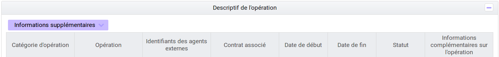5.2.1.3. Description complémentaire¶
Cette partie permet d’afficher l’ensemble des champs issus du bloc <Content> du bordereau de transfert, éventuellement modifiés par la suite (cf. ci-dessus)
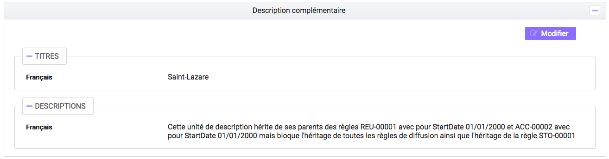5.2.1.4. Consultation et modification Métadonnées de gestion¶
Cette partie permet de visualiser, modifier ou supprimer les métadonnées de gestion applicables à une unité archivistique. Pour modifier les règles de gestion, cliquez sur le bouton « Modifier » dans le bloc « Métadonnées de gestion ».
Un premier bloc concerne deux champs spécifiques : « Modifications soumises à validation » et « Profil d’unité archivistique ». Ces champs ne sont pas associés à une catégorie de règle. Les valeurs sont prises en compte pour l’ensemble des règles de gestion s’appliquant à l’unité archivistique.
- Le champ « modifications soumises à validation » correspond au champ du SEDA NeedAuthorization dont la valeur peut être « oui » ou « non ». Cette information doit indiquer au front office si une autorisation humaine est nécessaire pour vérifier ou valider les opérations de gestion sur une unité archivistique donnée.
- Le champ « Profil d’unité archivistique » permet d’associer un profil d’unité archivistique (document type) existant dans le référentiel à une unité archivistique.
Les blocs suivants permettent de visualiser, d’ajouter, de modifier et de supprimer des catégories de règles et propriétés associées portées par l’unité archivistique.
Champs valables pour les différentes catégories de règles
Héritage des règles de gestion
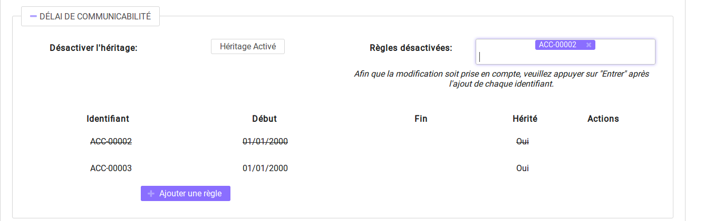Pour chaque règle, il est possible de gérer l’héritage des règles. Deux possibilités sont autorisées par le SEDA, soit toutes les règles de la catégorie sont désactivées (cette action est effectuée en cliquant sur le bouton « Désactiver l’héritage » soit l’héritage d’une règle spécifique est activé ou désactivé en spécifiant la règle concernée (ex: ACC-00003). Dans le premier cas, l’information « Cette unité archivistique n’hérite d’aucune règle » indique que toutes les règles de cette catégorie (DUA, DUC, Règle de communicabilité, etc.) provenant des parents ne sont plus appliquées à partir de cette unité archivistique. Dans le second, l’information « Règle désactivée » précise l’identifiant des règles provenant d’unités archivistisques parentes qui ne sont plus appliquées à partir de cette unité archivistique.
Consultation et modification
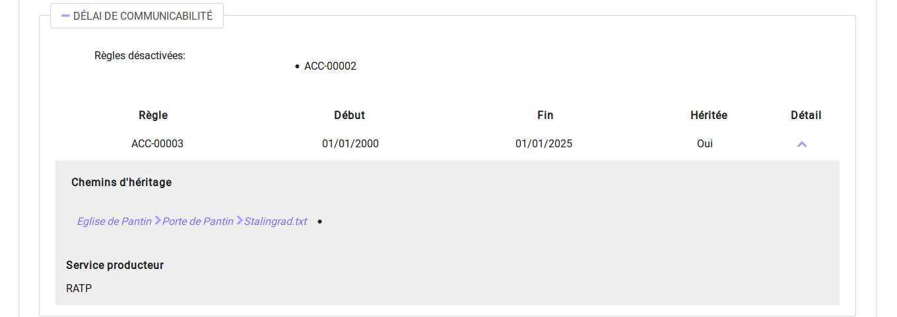
- En cliquant sur le pictogramme de « Détail » le chemin d’héritage et le service producteur à l’origine de la règle sont indiqués.
- Il est possible d’ajouter une ou plusieurs règles de gestion à toutes les catégories disponibles en cliquant sur le bouton « Ajouter une règle ».
Champs présents pour chaque catégorie de règles
- Délai de communicabilité
- Identifiant : le code affecté à la règle appliquée à cette unité dans le référentiel des règles de gestion. Par exemple ACC-00010.
- Date de début : date du début d’application de la règle
- Date de fin : date de fin d’application de la règle
- Héritée : la règle est hérité ou non de son parent
- Durée d’utilité administrative
- Sort final : déclaration du sort final de l’unité archivistique : conserver ou détruire
- Identifiant : le code affecté à la règle appliquée à cette unité dans le référentiel des règles de gestion. Par exemple APP-00005.
- Date de début : date du début d’application de la règle
- Date de fin : date de fin d’application de la règle
- Hérité : la règle est hérité ou non de son parent
- Durée de classification
- Identifiant : le code affecté à la règle appliquée à cette unité dans le référentiel des règles de gestion
- Date de début : date du début d’application de la règle
- Date de fin : date de fin d’application de la règle
- Hérité : la règle est hérité ou non de son parent
Les propriétés spécifiques à la classification
- Modifications soumises à validation : la valeur attendue est oui ou non
- Service émetteur : ce champ est libre, il n’est pas contrôlé par un référentiel
- Niveau de classification : cette valeur est déterminée lors de l’installation de la plateforme dans les paramètres de configuration. Par souci de démonstration dans cette IHM les deux niveaux sont indiqués « Confidentiel défense » ou « Secret défense ».
- Champ de diffusion : cette propriété restreint ou non l’accès à certains ressortissants (ex : spécial France, spécial Union Européenne)
- Date de réevaluation : date à laquelle cette règle peut changer de statut
- Délai de diffusion
- Identifiant : le code affecté à la règle appliquée à cette unité dans le référentiel des règles de gestion
- Date de début : date du début d’application de la règle
- Date de fin : date de fin d’application de la règle
- Hérité : la règle est hérité ou non de son parent
- Durée de réutilisation
- Identifiant : le code affecté à la règle appliquée à cette unité dans le référentiel des règles de gestion
- Date de début : date du début d’application de la règle
- Date de fin : date de fin d’application de la règle
- Hérité : la règle est hérité ou non de son parent
- Durée d’utilité courante
- Identifiant : le code affecté à la règle appliquée à cette unité dans le référentiel des règles de gestion
- Date de début : date du début d’application de la règle
- Date de fin : date de fin d’application de la règle
- Hérité : la règle est hérité ou non de son parent
- Sort final : déclaration du sort final de l’unité archivistique : Accès restreint / Transférer / Copier
Validation des modifications
La suppression d’une règle s’effectue en cliquant sur la corbeille.
Une fois les modifications saisies, un clic sur le bouton « Sauvegarder » ouvre une fenêtre modale afin de confirmer les modifications. Un clic sur le bouton « OK » met à jour et sauvegarde les règles de gestion.
5.2.1.5. Groupe d’objets techniques¶
Si des objets sont disponibles, cette section est visible et affichée par défaut. Le ou les objets présents dans le groupe d’objets ainsi que les métadonnées associées pour cette unité archivistique y sont affichés.
Chaque objet est listé dans une ligne du tableau. Les colonnes affichent les informations suivantes :
- Usage, correspondant aux utilisations de l’objet (consultation, conservation, etc.)
- Taille, exprimée en bytes
- Format, correspondant au nom littéral du format de l’objet
- Date, correspondant à la date de dernière modification du fichier ou de l’objet une fois entré dans la solution logicielle
- Téléchargement, un clic sur l’icône de téléchargement permet de consulter l’objet.
Un clic sur le pictogramme situé à droite de l’objet permet de consulter l’ensemble des métadonnées qui lui sont associées.
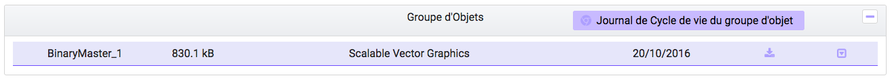Note
En ce qui concerne les références à des objets physiques, seul l’usage sera affiché dans les colonnes du tableau.
Les codes des unités disponibles sont celles répertoriées par l’UNECE.
Affichage de différentes versions lors de rattachement des unité archivistiques à un Groupe d’Objet Technique (GOT)
Il est possible de rattacher, en déclarant dans le manifest, une unité archivistique à un GOT existant dans le but de compléter un versement.
Ces rattachements peuvent concerner le versement de nouveaux usages ou de nouvelles versions. Le système permet d’importer plusieurs usages d’un même objet (BinaryMaster, Dissemination, TextContent…), il supporte également les différentes versions de cet objet. Les versions apparaissent sous la forme usage_1 / usage_2 / usage_3 Ces différents usages ou versions sont visibles dans le bloc « groupe d’objets ».
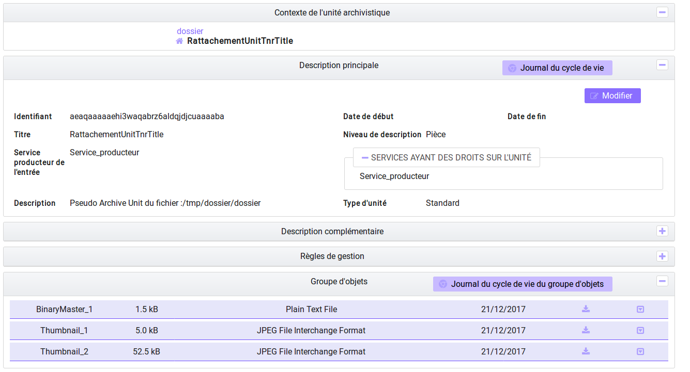5.2.1.6. Export du Dissemination Information Package (DIP)¶
Il est possible d’exporter l’unité archivistique sous forme de DIP. Trois choix d’exports sont disponibles :
- Unité archivistique
- Unité archivistique et sa descendance
- Ensemble de l’entrée
Suite au clic sur le bouton « Exporter » une fenêtre modale s’ouvre et indique que le DIP est en cours de création et qu’il sera téléchargeable dans le journal des opérations. Un bouton « OK » ferme la fenêtre.
Pour télécharger le DIP, retourner dans le journal des opérations, rechercher dans la catégorie d’opérations « Export DIP », et sélectionner dans les options de colonnes disponibles la case « Rapport ». Le ligne correspondant au dernier export sera affichée, et il suffit de cliquer sur l’icône correspondant au rapport pour afficher le répertoire du DIP généré.
5.2.1.7. Mettre au panier cf. Chapitre généralité utilisation du panier¶
Il est possible d’exporter une sélection d’unités archivistiques, même si celles ci proviennent de services producteurs différents, en créant une sélection. En revanche, le service producteur qui sera affiché dans le DIP est « pré-configuré » vis à vis du serveur utilisé.
L’export du panier ou de la sélection se fait de la même façon que pour un export classique. Une pop-up informe du fait que la génération du DIP est en cours, et le fichier en question se retrouvera via le journal des opérations, et sera disponible au téléchargement.
5.3. Consultation des journaux du cycle de vie¶
Le journal du cycle de vie est généré, une fois le processus d’entrée d’un SIP terminé avec succès et les nouvelles unités archivistiques et groupe d’objets créés. Il trace tous les événements qui impactent l’unité archivistique et les objets, dès leur prise en charge dans la solution logicielle Vitam.
5.3.1. Journal du cycle de vie d’une unité archivistique¶
Le journal du cycle de vie de chaque unité archivistique est disponible depuis la page de détail en cliquant sur l’icône « Journal du cycle de vie » ou depuis la liste du résultat de la recherche d’archives.
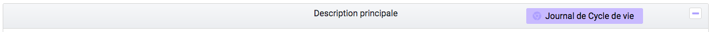Par défaut, l’écran du journal du cycle de vie de l’unité archivistique affiche les informations suivantes :
- Intitulé de l’événement
- Date de fin de l’événement
- Statut de l’événement
- Message de l’événement
L’utilisateur peut sélectionner des informations complémentaires en cliquant sur le bouton « Informations supplémentaires » et sélectionnant les options souhaitées dans la liste déroulante.
- Identifiant de l’évènement
- Identifiant de l’opération
- Catégorie de l’opération
- Code d’erreur technique
- Détails sur l’événement
- Identifiant de l’agent (réalisant l’opération)
- Identifiant interne de l’objet
- Identifiant du tenant (technique)
5.3.2. Journal du cycle de vie du groupe d’objet¶
Le journal du cycle de vie du groupe d’objets est disponible depuis le détail de l’unité archivistique, dans la partie groupe d’objets.
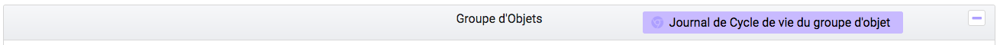Un clic sur ce bouton affiche le journal du cycle de vie du groupe d’objets.
Par défaut, l’écran du journal du cycle de vie du groupe d’objets affiche les informations suivantes :
- Intitulé de l’événement
- Date de fin de l’événement
- Statut de l’événement
- Message de l’événement
L’utilisateur peut sélectionner des informations complémentaires en cliquant sur le bouton « Informations supplémentaires » et en sélectionnant les options souhaitées dans la liste déroulante:
- Identifiant de l’évènement
- Identifiant de l’opération
- Catégorie de l’opération
- Code d’erreur technique
- Détails sur l’événement
- Identifiant de l’agent (réalisant l’opération)
- Identifiant interne de l’objet
- Identifiant du tenant (technique)
5.4. Recherche par service producteur et consultation du registre des fonds.¶
Le registre des fonds a pour but de :
- fournir une vue globale et dynamique de l’ensemble des archives organisées selon leur origine (service producteur) entrées dans la solution logicielle et placées dès lors sous la responsabilité du service d’archives.
- permettre d’effectuer des recherches dans les archives en prenant pour critère l’origine de celles-ci, le service producteur
5.4.1. Recherche¶
Pour y accéder, l’utilisateur clique sur le menu « Recherche », puis sélectionne « Recherche par service producteur ».
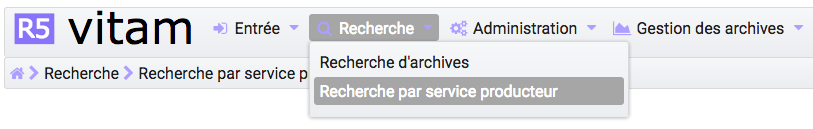Par défaut, les services agents ayant fait des entrées en tant que service producteur sont affichés sous le formulaire de recherche. NB: les services versants ne figurent pas dans cette liste.
L’utilisateur peut effectuer une recherche :
- par identifiant : pour effectuer une recherche précise, on utilise le champ « Identifiant » en utilisant l’identifiant exact du service recherché.
- par Intitulé : la recherche n’a alors pas besoin d’être exacte. L’utilisateur peut saisir une chaîne de caractères avec ou sans accent, des mots au singulier comme au pluriel. Lorsque l’on effectue une recherche par identifiant, les autres champs sont grisés.
- par Description
Pour initier la recherche, l’utilisateur saisit ses critères de recherche et clique sur le bouton « Rechercher ». La liste par défaut est alors actualisée avec les résultats correspondants à la recherche souhaitée.
5.4.2. Affichage de la liste des résultats¶
Suite à une recherche, les résultats se présentent sous la forme d’un tableau affichant les informations suivantes :
- Intitulé
- Identifiant
- Description
5.4.3. Consultation du détail d’un producteur¶
Depuis la liste des résultats, l’utilisateur peut consulter le détail d’un service producteur en cliquant sur la ligne voulue. Il accède alors à la matrice descriptive du service agent.
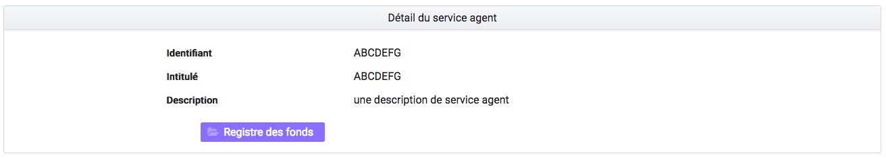5.4.4. Consultation du registre des fonds¶
Depuis le détail du service producteur, l’utilisateur peut consulter le registre des fonds de ce service en cliquant sur le bouton « Registre des Fonds » afin d’afficher le détail complet du fonds.
Deux blocs d’informations sont disponibles depuis le détail du registre des fonds.
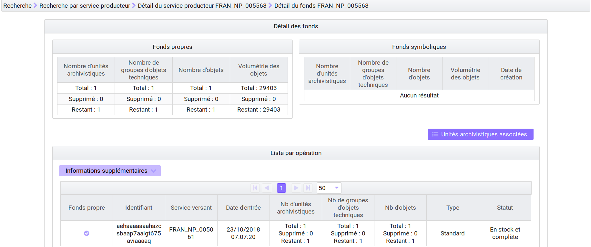5.4.4.1. Fonds propres¶
Les fonds propres regroupent toutes les unités archivistiques, groupes d’objets et objets ainsi que leurs volumétries.
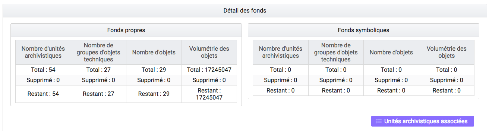Cette vue affiche, sous forme de tableau, les informations consolidées suivantes pour ce service producteur et par type de fonds:
- nombre d’unités archivistiques
- Total : Nombre d’unités archivistiques entrées dans la solution logicielle Vitam
- Supprimé : Nombre d’unités archivistiques supprimées de la solution logicielle Vitam
- Restant : Nombre d’unités archivistiques restantes dans la solution logicielle Vitam
- nombre de groupes d’objets techniques
- Total : Nombre de groupes d’objets entrés dans la solution logicielle Vitam
- Supprimé : Nombre de groupes d’objets supprimés de la solution logicielle Vitam
- Restant : Nombre de groupes d’objets restant dans la solution logicielle Vitam
- nombre d’objets
- Total : Nombre d’objets entrés dans la solution logicielle Vitam
- Supprimé : Nombre d’objets supprimés de la solution logicielle Vitam
- Restant : Nombre d’objets restant dans la solution logicielle Vitam
- volumétrie des objets
- Total : Volume total des objets entrés dans la solution logicielle Vitam
- Supprimé : Volume total des objets supprimés de la solution logicielle Vitam
- Restant : Volume total des objets restant dans la solution logicielle Vitam
5.4.4.2. Fonds Symboliques¶
les fonds symboliques listent une image figée du stock pour les trois derniers calculs des fonds symboliques pour ce service producteur.
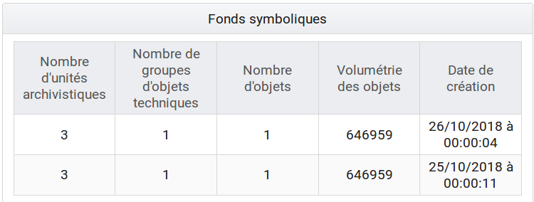
- Nombre d’unités archivistiques, nombres de groupes d’objets techniques et nombres d’objets indiquent le nombre de ces éléments pour le fond symbolique de ce producteur
- Volumétrie des objets représente le volume total en octet
- La date de création est la date du calcul de ce fond symbolique
Note
il est possible en cliquant sur le bouton « unités archivistiques associées » de se référer à la liste des différentes unités archivistiques liées à ce service producteur.
5.4.4.2.1. Détail des opérations¶
Sous cette partie, un tableau liste des entrées effectuées pour ce service producteur est affichée sous forme de tableau.
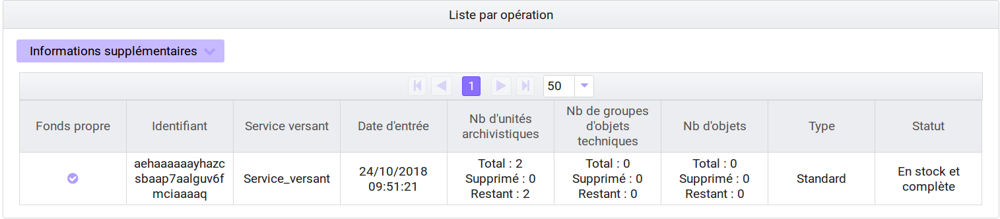Pour chaque entrée, les informations suivantes sont affichées :
- Identifiant de l’opération attribué par la solution logicielle Vitam (cet identifiant correspond au contenu du champ MessageIdentifier de la notification d’entrée)
- Service versant
- Date d’entrée
- Nombre d’unités archivistiques
- Total : Nombre d’unités archivistiques entrées dans la solution logicielle Vitam
- Supprimé : Nombre d’unités archivistiques supprimées de la solution logicielle Vitam
- Restant : Nombre d’unités archivistiques restantes dans la solution logicielle Vitam
- Nombre de groupes d’objets techniques
- Total : Nombre de groupes d’objets entrés dans la solution logicielle Vitam
- Supprimé : Nombre de groupes d’objets supprimés de la solution logicielle Vitam
- Restant : Nombre de groupe d’objets restants dans la solution logicielle Vitam
- Nombre d’objets
- Total : Nombre d’objets entrés dans la solution logicielle Vitam
- Supprimé : Nombre d’objets supprimés de la solution logicielle Vitam
- Restant : Nombre d’objets restants dans la solution logicielle Vitam
- Type (standard, plan de classement, arbre de positionnement)
- Statut de l’entrée (En stock et complète, En stock et mise à jour, Sortie du stock)
- Informations supplémentaires pouvant être affichées en cliquant sur le sélecteur
Il est possible de cliquer sur chaque ligne du tableau pour obtenir un résumé de l’opération, indiquant par exemple pour une entrée le nombre d’éléments créés (unités archivistiques, groupes d’objets et objets techniques) et la volumétrie des objets.
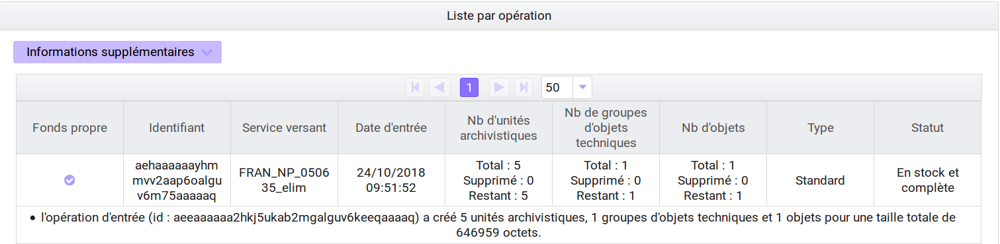Un bouton « Unités archivistiques associées » permet d’accéder directement à la liste des unités archivistiques liées à ce service producteur.